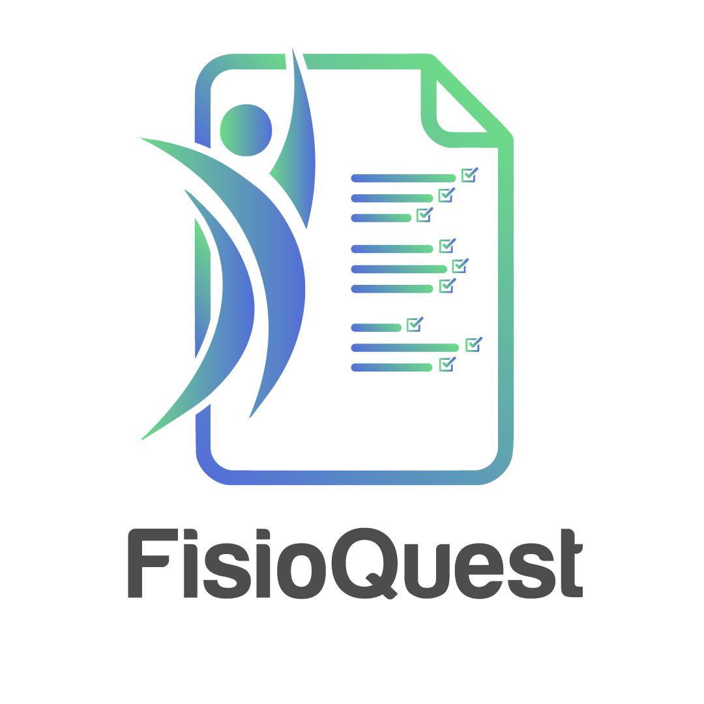

Escala de Tampa (TSK-17) — Para cada afirmação, escolha a opção que melhor representa sua opinião atual.
Clique na imagem do corpo onde você sente receio de se movimentar e selecione a intensidade:
Escolha uma das quatro opções para cada afirmação: